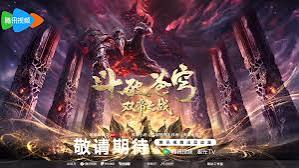

home
profile

galerry
artikel
guest book
Menonton Donghua
Mengenal Animasi Tiongkok

Animasi yang berasal dari Tiongkok.
1. Pengertian Donghua
Donghua adalah sebutan untuk animasi yang berasal dari Tiongkok. Donghua memiliki berbagai genre, seperti aksi, fantasi, petualangan, komedi, romantis, dan sejarah. Beberapa donghua juga diadaptasi dari novel populer Tiongkok, seperti novel xianxia yang menceritakan perjalanan seseorang dalam mencapai kekuatan dan keabadian.
Donghua semakin dikenal di berbagai negara, termasuk Indonesia. Cerita yang menarik, kualitas animasi, dan desain karakter yang unik menjadi daya tarik bagi para penonton.
2. Alasan Menonton Donghua
Banyak orang menonton donghua karena ceritanya yang beragam dan penuh petualangan. Donghua sering menceritakan persahabatan, perjuangan, pengorbanan, dan perjalanan tokoh utama dalam menghadapi berbagai tantangan.
Selain itu, donghua juga menampilkan dunia fantasi, kerajaan kuno, seni bela diri, dan dunia kultivasi yang menarik.
3. Manfaat Menonton Donghua
- Mengurangi stres. Menonton donghua dapat menjadi hiburan setelah menjalani aktivitas sehari-hari.
- Mendapatkan nilai kehidupan. Ceritanya mengajarkan kerja keras, kesabaran, dan pantang menyerah.
- Meningkatkan imajinasi. Dunia fantasi dapat merangsang kreativitas dan daya imajinasi.
- Mengenal budaya Tiongkok. Donghua memperkenalkan pakaian tradisional, bangunan kuno, dan mitologi Tiongkok.
- Mempelajari bahasa asing. Dialog dan subtitle dapat membantu penonton mengenal kosakata bahasa Mandarin.
4. Genre Donghua
Donghua memiliki banyak genre. Genre aksi dan petualangan cocok untuk penonton yang menyukai pertarungan. Genre fantasi dan xianxia menceritakan kultivasi serta kekuatan supernatural. Ada juga genre komedi dan romantis yang berfokus pada humor dan hubungan antarkarakter.
5. Menonton Donghua secara Bijak
Menonton donghua harus dilakukan secara bijak. Kita perlu mengatur waktu agar tidak mengganggu kegiatan belajar, pekerjaan, istirahat, dan aktivitas sehari-hari. Pilihlah platform resmi untuk menonton dengan aman.
Rangkuman
Donghua adalah animasi dari Tiongkok yang memiliki beragam genre, seperti aksi, fantasi, petualangan, komedi, dan romantis. Selain menjadi hiburan, donghua dapat mengurangi stres, meningkatkan imajinasi, memberikan pelajaran kehidupan, serta mengenalkan budaya Tiongkok.
Kesimpulan
Kesimpulannya, menonton donghua merupakan kegiatan yang menyenangkan dan bermanfaat apabila dilakukan secara bijak dan tidak berlebihan.